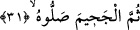
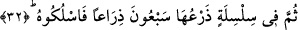
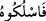

vurabilir. Nitekim el-Kübra isimli eserde bu şekilde yer alır. Ancak takyid yâni
bağlayarak kontrol altına almak mekruh görülmemiştir. Çünkü bu, isyan eden ve
kaçanlara karşı müslümanların öteden beri uyguladığı bir yöntemdir.
31. Sonra alevli ateşe atın onu!
Âyette cehennem anlamına gelen “cahîm” kelimesinin fiilden daha önce zikredilmesi,
burada bir tahsis; yâni “atılma yerinin sâdece cahîm/cehennem olması” anlamını ifâde
eder. Buna göre âyet-i kerîmenin mânâsı; “Siz onu ancak ve ancak cahîme atın, oraya
sokun, başka yere atmayın, kendisini sâdece orada yakın, o en büyük ateştir” demek
olur. Böylece kendisine verilecek olan cezâ, işlemiş olduğu mâsiyete uygun düşmüş
olur. Çünkü o, insanlara karşı böbürleniyor ve kendini onlardan büyük görüyordu.
Sa’dî Müftî der ki: Bu cezâ -dünyada iken- kendini insanlardan büyük gören ve
böbürlenenlere mahsusdur. Ancak Sâdî Müftî’nin bu ifâdesi -bize göre- tartışmalıdır.
Kendisine verilecek cevap yukarda geçmiştir.
32. Sonra da onu yetmiş arşın uzunluğunda bir zincir içinde oraya sokun!
Söz konusu zincir, ateşten olup içiçe geçmiş düzgün halkalardan ibârettir. Kelimenin
başındaki “fî” harf-i cerri “sokunuz” anlamına gelen “feslukû” fiiline bağlıdır. Buradaki
“fâ”, kelimenin ilerde gelecek olan fiile bağlanmasına engel değildir.
“Arşın” anlamındaki “zirâ’” kelimesi, demirden veya ağaçtan yapılmış ölçü âletidir.
Müfredat’ta yer aldığına göre zirâ’, -aslında- elimizin orta parmak ucundan dirseğe
kadar olan kısmının adıdır. Ancak zirâ’ kelimesi ile elin bilinen bu kısmı değil, ölçülen
kısım ifâde olunur.
“Yetmiş” şeklinde tercüme edilen “seb’ûn” kelimesi “zirâ’” kelimesi ile birlikte cer
mahallinde olup daha önce geçen “silsile” kelimesinin sıfatıdır. Daha sonra gelen
“zirâ’an” kelimesi ise temyizdir.
“
/Feslukûh” fiilinin kökü olan “silk” kelimesi, herhangi bir kimseyi ip, bağ ve
başka bir şeyle bağlayıp bir yere sokmak demektir. Âyetin başında yer alan “sümme”
edâtı zamanda sonralık değil, elini boynuna bağlamak, cehenneme atmak ile zincire
vurarak bununla birlikte cehenneme sokmak cezâsı arasındaki şiddet açısından sonralığı
ifâde etmektedir. Bir başka ifâdeyle buradaki “sümme” edâtı, korkutma makamının
gereği olarak akla gelebilecek mühlet verme mânâsını hüküm dışına çıkarmaktadır.